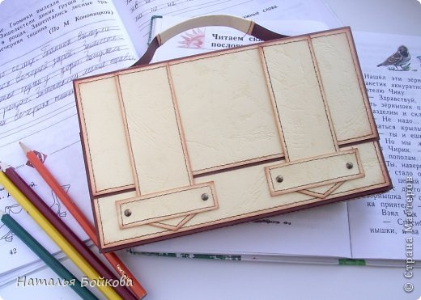

Открытка-портфель для учителя
Вот и подходит к концу учебный год. Все мы переживали за наших деток, а вместе с нами и наши учителя. Переживали, учили, воспитывали, были для них вторыми мамами. Хочется в конце учебного года сказать им большое спасибо и сделать что-нибудь приятное. Давайте поздравим их и сделаем им открытку. Во все времена одним из символов учебы был портфель. Хотя он и изменился за последние годы до неузнаваемости, все же мы его помним таким. И открытку мы будем делать в виде портфеля. Кстати, такую открытку можно дарить не только учителям, но и мужчинам, начальникам и просто офисным работникам.
Заголовок h2
- два вида контрастной бумаги,
- 6 брадс,
- швейная машинка (но можно обойтись и без нее),
Заголовк h3
Вот и подходит к концу учебный год. Все мы переживали за наших деток, а вместе с нами и наши учителя. Переживали, учили, воспитывали, были для них вторыми мамами. Хочется в конце учебного года сказать им большое спасибо и сделать что-нибудь приятное. Давайте поздравим их и сделаем им открытку. Во все времена одним из символов учебы был портфель. Хотя он и изменился за последние годы до неузнаваемости, все же мы его помним таким. И открытку мы будем делать в виде портфеля. Кстати, такую открытку можно дарить не только учителям, но и мужчинам, начальникам и просто офисным работникам.
Заголовок h4
Вот и подходит к концу учебный год. Все мы переживали за наших деток, а вместе с нами и наши учителя. Переживали, учили, воспитывали, были для них вторыми мамами. Хочется в конце учебного года сказать им большое спасибо и сделать что-нибудь приятное. Давайте поздравим их и сделаем им открытку. Во все времена одним из символов учебы был портфель. Хотя он и изменился за последние годы до неузнаваемости, все же мы его помним таким. И открытку мы будем делать в виде портфеля. Кстати, такую открытку можно дарить не только учителям, но и мужчинам, начальникам и просто офисным работникам.
Вот и подходит к концу учебный год. Все мы переживали за наших деток, а вместе с нами и наши учителя. Переживали, учили, воспитывали, были для них вторыми мамами. Хочется в конце учебного года сказать им большое спасибо и сделать что-нибудь приятное. Давайте поздравим их и сделаем им открытку. Во все времена одним из символов учебы был портфель. Хотя он и изменился за последние годы до неузнаваемости, все же мы его помним таким. И открытку мы будем делать в виде портфеля. Кстати, такую открытку можно дарить не только учителям, но и мужчинам, начальникам и просто офисным работникам.
12 мая 2014